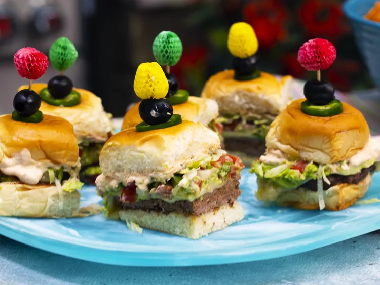

Seven layer sliders

These seven layers sliders have everything you'd ever want in a burger-a rich flavourful burger
served in Hawaiian rolls topped with homemade grilled pico, crunchy lettue,jalapenos, guacamole,and cheese
Nutrition Facts:[per serving] it contains 310Calories,
14gFat,30gCarbs,17g
Protein.
Ingredients:
3 Roma tomatoes,halved and seeds removed.
1 large [1 1/2-inch] slice white onion.
2 tablespoons finely chopped cilantro.
2 large jalapeno peppers, divided.
1 tablespoon freshly squeezed lime juice.
1 teaspoon kosher salt,divided.
1/4 teaspoon garlic powder.
1/3 cup sour cream.
2 tablespoon mayonnasie.
2 teaspoon taco seasoning,divided.
1 [12 piece-package]king's Hawaiian rolls.
1 lb ground sirloin.
1/2 cups shredded monterey jack cheese.
1 cup shredded lettue.
24 pickled jalapeno slices.
12 black olives.
Steps and Directions:
- Step 1:
Preheat an outdoor grill for high heat and lightly oil the gate.
- Step 2:
Place tomatoes,onion and 1 jalapeno on the hot grill and cook, undisturbed, untill grill marks form,
about 2minutes.Remove tomatoes and jalapeno and set aside to cool.Flip onions slice and cook for 1 more
minutes.Remove from heat to cool slightly.Finely chop tomatoes, and onion.Remove seeds from jalapeno
if desired and finely chop.Add chopped veggies to a bowl and stir in cilantro, limejuice,1/2 teaspoon salt,
and garlicpowder.set grilled pico de gallo aside.
- Step 3:
Reduce grill heat to medium-high.
- Step 4:
Combine sour cream, mayonnasie, and 1 tablespoon taco seasoning in a small bowl;mix well and set aside.
- Step 5:
Combine ground beef and remaining taco seasoning in a bowl and mix well.Form into 2 rectangular patties.
- Step 6:
Slice whole loaf of rolls in half and place each cut side down on the lightly oiled grill grate.Toast
on the hot grill for 1 minute.
Remove from heat and set on a cutting board.
- Step 7:
Place burger patties on the grill and cook for 4 minutes.season top side with remaining 1/2 teaspoon salt
and flip.cook untill desired degree of doneness,about 3 more minutes. Top each patty with cheese is
melted, 30seconds more.
- Step 8:
Remove from heat and place on buttom half of toasted buns.Top cheese with guacamole,grilled pico de gallo,
lettue,and sliced jalapenoes.spread desired amount of sour cream sauce on the cut side of the bun tops and
reserve any remaining sauce to serve on the side.
- Step 9:
Invert the sauced buns on the tops of the sliders.cut into 12 sliders.slice the remaining jalapeno thinly.
Garnish each slider with an olive,a slice of jalapeno, and a toothpick.